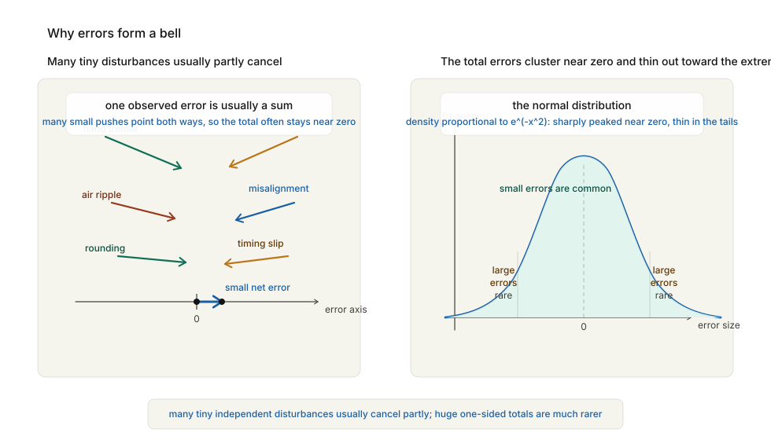

In the summer of 1654, a French nobleman with a taste for gambling found himself bothered by a problem that money alone could not settle.
His name was Antoine Gombaud, better known as the Chevalier de Méré. He was clever, vain, socially well connected, and very fond of games of chance. Dice, cards, wagers on sequences of throws — these were not idle amusements for him. They were part sport, part philosophy, part professional concern. A gambler who does not understand odds is like a merchant who cannot add columns of figures. So de Méré had begun to notice something unpleasant: intuition about chance is often wrong.
The particular question that troubled him was this. Suppose two players are gambling on a game played over several rounds. Suppose the rules say that the first player to win three rounds takes the whole stake. But then the game is interrupted — by darkness, by a quarrel, by soldiers at the door, by any of the ordinary inconveniences of seventeenth-century life — before either player has yet reached three wins. How should the pot be divided fairly?
This is not a theatrical puzzle. It is a practical problem about money, contracts, and fairness. If Player A is ahead when the game stops, he clearly deserves more than Player B. But how much more? The whole pot? Half? Some carefully calculated share? De Méré passed the question to Blaise Pascal. Pascal, in turn, wrote to Pierre de Fermat. And between them, in a brief burst of correspondence, they created the mathematics of uncertainty.
Let us make the problem concrete. Suppose two players, A and B, are playing a fair game in which each round is equally likely to be won by either player. The first player to win three rounds takes the stake. But the game is interrupted when A has already won two rounds and B has won one.
At this moment, A is ahead. But A has not yet won. The question is: if the total stake is, say, 64 pistoles, how should it be divided?
Pascal and Fermat’s answer was simple in principle and revolutionary in method. Do not ask who deserves the money in some vague moral sense. Ask instead what future outcomes are still possible, and how likely they are. From the current score, there can be at most two more rounds. If A wins the next round, the game is over and A takes everything. If B wins the next round, the score becomes 2-2 and the final round decides the whole game. So there are effectively four equally likely two-round futures:
A wins, A wins
A wins, B wins
B wins, A wins
B wins, B winsIn three of those four futures, A wins the match. In only one does B win.
So the fair division of the 64 pistoles is:
A gets 48
B gets 16because:
48 = 64 × 3/4
16 = 64 × 1/4This is the first great move in probability. Fairness is translated into expectation. You do not divide the pot according to who is currently smiling, or who has played more stylishly, or who protests loudest. You divide it according to the value each player could reasonably expect to receive if the game were allowed to continue.
That idea — expected value — is so fundamental now that it is hard to feel how strange it once was. It asks you to treat uncertain futures as if they can be counted and weighted before they happen. It turns ignorance into arithmetic.
Before we go further, it is worth being precise about what probability means, because this chapter depends on a new kind of mathematical object.
A probability is not a certainty. It is a number between 0 and 1 that measures how strongly the available structure supports an outcome. If an event is impossible, its probability is:
0If it is certain, its probability is:
1If a coin is fair, the probability of heads is:
1/2and the probability of tails is also:
1/2For a fair six-sided die, the probability of rolling a 4 is:
1/6The basic rule in simple cases is:
probability = favourable outcomes / total equally likely outcomesSo if you draw one card from a standard deck, the probability of drawing a king is:
4/52 = 1/13That much is straightforward. But the difficulty begins almost immediately, because the world is rarely made of neat, equally likely cases laid out for inspection. Coins can be biased. Insurance risk is not a deck of cards. A court deciding how much to trust a witness is not rolling dice. The question of what probability really means — whether it measures symmetry, ignorance, long-run frequency, or rational degree of belief — would occupy philosophers and mathematicians for centuries.
Pascal and Fermat did not solve that philosophical problem. They did something more urgent. They showed that uncertain situations can often be broken into discrete cases and reasoned about systematically. That was enough to start a discipline.
And once the discipline existed, it spread very quickly.
One of the reasons Pascal was so well equipped for the problem of points was that he already knew how to count structured possibilities.
The device now called Pascal’s triangle had been known in various forms long before him — in India, Persia, and China as well as Europe — but Pascal studied it intensively and gave it a central role in combinatorics, the mathematics of counting arrangements.
The triangle begins:
1
1 1
1 2 1
1 3 3 1
1 4 6 4 1Each interior number is the sum of the two above it. What do these numbers count? They count combinations. For example, the row:
1 4 6 4 1tells you how many sequences have 0, 1, 2, 3, or 4 successes.
Take a concrete case: four coin flips. There are:
2 × 2 × 2 × 2 = 16equally likely sequences in all. Now group those 16 sequences by how many heads they contain. The row:
1 4 6 4 1means:
0 heads: 1 sequence
TTTT
1 head: 4 sequences
HTTT, THTT, TTHT, TTTH
2 heads: 6 sequences
HHTT, HTHT, HTTH, THHT, THTH, TTHH
3 heads: 4 sequences
HHHT, HHTH, HTHH, THHH
4 heads: 1 sequence
HHHHSo the middle 6 is not mysterious. It is simply the number of ways to choose which 2 of the 4 positions are heads.
This matters because probability is often hidden inside counting. If all sequences of four flips are equally likely, then the chance of getting exactly two heads is:
6/16 = 3/8since there are 16 total sequences and 6 of them contain exactly two heads.
Pascal saw that uncertain futures could be counted in structured ways. Fermat saw it too. Their correspondence turned gambling from folklore into combinatorics.
And once combinatorics entered the story, probability became scalable. It could handle not only one die or one interrupted game, but repeated events, compound events, entire classes of wagers.
This was the moment at which chance stopped being merely a matter of luck and became a matter of calculation.
The first great textbook of this new subject was written not by Pascal or Fermat but by Christiaan Huygens, the Dutch mathematician, physicist, and astronomer we already met indirectly in Leibniz’s education.
In 1657, only a few years after Pascal and Fermat’s letters, Huygens published On Reasoning in Games of Chance. It was the first systematic treatise on probability in Europe.
Its central concept was expected value. Suppose I offer you the following gamble:
What is this gamble worth before the coin is tossed?
Huygens’s answer is:
(1/2 × 10) + (1/2 × 0) = 5So the fair price of the gamble is 5 livres.
This looks almost trivial. It is not. It says that uncertain prospects can be converted into present value by weighting outcomes with probabilities. That principle now lies behind insurance, finance, actuarial science, and enormous parts of economics. It underlies every serious discussion of risk.
A merchant deciding whether to insure a cargo, a lender deciding whether to finance a voyage, a government deciding how to price an annuity, all face the same underlying question: what is an uncertain future payment worth today?
The mathematics of probability arrived just as Europe was becoming a continent of expanding trade, joint-stock ventures, colonial risk, marine insurance, and public debt. This was not a coincidence. Merchants and states needed a language for uncertainty as urgently as earlier societies had needed a language for land measurement or projectile motion.
The practical problem had changed. The pattern had not.
Expected value is the founding idea of probability. It is also, if treated too naively, a trap. The trap became famous in the early eighteenth century through a puzzle now called the St Petersburg paradox. Here is the game. A fair coin is tossed until it lands heads.
2^nHow much is a fair ticket to play?
If you use expected value in the straightforward Huygens style, the answer seems absurd:
(1/2 × 2) + (1/4 × 4) + (1/8 × 8) + (1/16 × 16) + ...Each term equals 1, so the total becomes:
1 + 1 + 1 + 1 + ...which diverges. The expected value is infinite.
But no sane person would pay an infinite amount to enter such a game. In fact, most people would not pay even a very large amount. The game offers huge prizes, but only with fantastically small probabilities. The formal expectation and the lived value pull apart.
This was an important moment because it showed that probability, by itself, is not always enough. Human decisions do not depend only on possible monetary outcomes. They depend on how those outcomes are experienced.
Daniel Bernoulli, nephew of Jakob, offered the most influential response in 1738. Money, he argued, should not be treated as if every additional unit has the same value to the person receiving it. The difference between 10 ducats and 20 ducats matters enormously to a poor person. The difference between 10,000 and 10,010 ducats hardly matters at all to a rich one.
So perhaps the thing to average is not raw money, but utility — the subjective value a person derives from wealth.
Bernoulli proposed that utility grows more slowly than wealth itself, roughly like a logarithm:
utility ∝ log(wealth)Under this rule, doubling your money still helps, but not by a fixed amount each time. The gain in felt value gets smaller as you become richer.
This resolves the paradox neatly. A game may have infinite expected monetary payout and yet a perfectly finite expected utility, which means a rational person would pay only a finite entry fee.
The deeper significance is hard to overstate. Probability had begun as mathematics about fair games. Now it was colliding with psychology, economics, and human preference. It was discovering that rational choice under uncertainty is not only about external outcomes. It is also about the structure of desire, fear, and diminishing returns.
This did not destroy expected value. It refined it. A merchant insuring a cargo, a banker diversifying investments, or a government designing pensions must care not only about mathematical expectation in the abstract but about the scale and distribution of possible losses.
In other words: once uncertainty enters human life, arithmetic alone does not settle everything. Probability had opened the door. Utility theory showed how complicated the room behind it really was.
If Pascal and Fermat invented the arithmetic of chance, Jakob Bernoulli discovered its deepest and strangest promise. The promise is this: although individual events are unpredictable, large collections of them can become astonishingly regular. This is one of the most important ideas in the entire history of mathematics, and one of the hardest for intuition to accept. A single coin toss is uncertain. It may land heads. It may land tails. There is nothing to calculate beyond the symmetry:
P(heads) = 1/2But what about 10 tosses? Or 100? Or 10,000? On 10 tosses, you might get 7 heads and 3 tails. That is not surprising. On 100 tosses, getting 70 heads would be less ordinary. On 10,000 tosses, getting 7,000 heads would be extraordinary. The larger the number of tosses, the closer the proportion of heads is likely to drift toward:
1/2Bernoulli proved a version of this in his posthumously published Ars Conjectandi of 1713. It is now called the law of large numbers.
What the law says, roughly, is that in repeated independent trials, the observed frequency of an event tends to approach the true probability of that event as the number of trials increases.
If the probability of heads is 1/2, then:
heads / total tosses → 1/2as the number of tosses becomes very large.
This is a remarkable result because it connects two things that seem conceptually separate:
Bernoulli’s theorem explains why a casino can make money while individual gamblers sometimes win, why insurance companies can function despite not knowing who will die this year, and why governments can reason statistically about populations without knowing the fate of each citizen in advance. Chance, in other words, contains law inside it. The individual case remains uncertain. The aggregate becomes stable.
This was a profound intellectual shift. For the first time, mathematicians had a rigorous language for describing a world in which certainty is unavailable locally but recoverable globally. A single event may be unknowable. A large enough class of events may be predictable with great confidence.
This is the foundation of statistics.
Probability becomes much more interesting the moment events stop being isolated. Suppose I ask for the probability that a randomly chosen card from a standard deck is a king. The answer is:
4/52 = 1/13Now suppose I tell you something else: the card is a face card.
That information changes the question. The relevant sample space is no longer all 52 cards. It is only the 12 face cards: jacks, queens, and kings. Among those 12, exactly 4 are kings. So the new probability is:
4/12 = 1/3The card itself has not changed. Only your knowledge has.
This is conditional probability: the probability of one event given that some other event is already known to have occurred.
In notation:
P(king | face card) = 1/3The vertical bar means “given that.”
This sounds modest, but it is a profound shift. Probability is no longer just about bare symmetry. It becomes a calculus of information. As soon as you know something, the space of possibilities contracts, and the numbers must change with it. This is how real reasoning usually works. A physician does not ask for the probability of a disease in the population at large, but the probability of the disease given a set of symptoms. A judge does not ask how often witnesses are wrong in the abstract, but how likely this witness is to be wrong under these specific conditions: poor light, long distance, stress, and delayed recall. A navigator does not ask whether a storm is possible, but how likely it is given the barometer and the sky.
To handle such problems, mathematicians needed a general multiplication rule:
P(A and B) = P(A) × P(B | A)That is: the probability that A happens, multiplied by the probability that B happens once A has happened.
For example, if you draw two aces in succession from a deck without replacement, the probability is:
(4/52) × (3/51)not
(4/52) × (4/52)because the first draw changes the second one. The second probability is conditioned by the first event.
This way of thinking made Bayes’ later move possible. Once probability could track how information changes a situation, it was only one further step to ask whether new evidence can be used to change belief about hidden causes.
Once people understood that large populations exhibit regularities invisible in individual cases, the obvious next question was financial:
Can human life itself be treated statistically?
This is a grim question, but it is also an administrative one. If a government sells life annuities — promising to pay an annual sum to a person for as long as they live — it needs to know what that promise is worth. Price it too low, and the state loses money. Price it too high, and nobody buys. Either way, arithmetic matters.
In 1693, the astronomer Edmond Halley — the same Halley whose name is attached to the comet — published an analysis of birth and death records from the city of Breslau. From these records he constructed one of the first workable life tables in Europe.
A life table tells you, for each age, roughly how many people out of an original population can be expected to survive to the next year.
Suppose, for example, that out of 1,000 people alive at age 30, about 990 survive to age 31. Then the probability of surviving that one-year interval is approximately:
990/1000 = 0.99If you know such probabilities for every age, you can estimate the expected cost of an annuity. You do not know whether this particular thirty-year-old merchant will live to 40, 60, or 75. But if you insure thousands of people, you do not need to know. The law of large numbers does the work.
This was a moment of enormous significance. Probability moved out of the gaming house and into the machinery of the state. It began to govern pensions, annuities, insurance, demography, and eventually public health.
The same mathematics that tells you how to divide an interrupted gambling pot can tell you how to price a widow’s pension.
There is something slightly unsettling about this, and there should be. Statistics is humane and inhuman at once. It can make fairer institutions possible. It can also turn human lives into entries in a table. The tension never goes away.
But the mathematics itself had crossed a threshold. Chance was no longer merely a topic for gamblers. It had become a tool of governance.
Up to this point, probability has flowed forward. You know the structure of the situation, and you calculate the likelihood of outcomes. If the die is fair, what is the chance of rolling a 6? If the coin is fair, what is the chance of three heads in four tosses? But there is another, subtler question: what if you know the outcome, and want to reason backward to the cause?
That question lies at the heart of inference. It is the question physicians ask when reading a test result, judges ask when evaluating evidence, scientists ask when deciding which hypothesis best explains the data, and intelligence officers ask when interpreting a report whose source may or may not be reliable.
The mathematical tool for this backward reasoning is now called Bayes’ theorem, after the English clergyman Thomas Bayes, whose essay was published posthumously in 1763.
Here is a simple example.
Suppose there are two bags:
You choose one bag at random, each with probability:
1/2Then you draw one ball, and it is black.
What is the probability that you chose Bag A?
At first glance many people guess 1/2, because the bags were chosen equally often. But the black ball is evidence. It should change your belief.
Using Bayes’ rule:
P(A | black) = P(black | A) P(A) / P(black)Now:
P(black | A) = 3/4
P(A) = 1/2
P(black | B) = 1/4
P(B) = 1/2So the total probability of drawing black is:
P(black) = (3/4 × 1/2) + (1/4 × 1/2) = 1/2Therefore:
P(A | black) = (3/4 × 1/2) / (1/2) = 3/4Once you see the black ball, the probability that you chose the black-heavy bag jumps from 1/2 to 3/4.
This is a profound shift. Probability is no longer only about predicting outcomes from known structures. It becomes a way of updating belief in light of evidence. Bayes’ theorem is, in one sense, a simple identity. In another sense, it is one of the most far-reaching ideas in mathematics. It formalises learning. Every time new evidence arrives, rational belief should change in a definite quantitative way. That is an extraordinary claim. And once stated, it is hard to unsee.
The person who did most to extend probability from scattered insights into a general worldview was Pierre-Simon Laplace.
Laplace was born in Normandy in 1749, made his career in Paris, survived monarchy, revolution, terror, empire, and restoration with a flexibility that was not always morally admirable but was certainly politically effective, and became one of the most formidable mathematical physicists in European history.
He is often remembered for celestial mechanics — for showing that the solar system could be analysed with Newtonian mathematics at a level of precision Newton himself had not achieved. But probability was one of his other great domains.
Laplace saw that probability was not merely a branch of gambling mathematics. It was the logic of incomplete knowledge. When certainty is impossible, probability tells you how a rational mind should proceed. This idea turned probability into a universal intellectual instrument. Courts could use it when weighing testimony. Governments could use it when analysing birth and death records. Astronomers could use it when combining imperfect observations. Surveyors could use it when reconciling measurements that do not quite agree. Insurers could use it when pricing risk.
Laplace pushed the subject outward in every direction. He developed inverse probability in far greater generality than Bayes had. He wrote the Théorie analytique des probabilités in 1812, making probability part of the central mathematical culture of Europe. He helped fuse it with statistics, astronomy, and public administration.
His most famous philosophical statement about chance is also his most revealing. If there existed, he wrote, an intelligence vast enough to know at a given instant the position and motion of every particle in the universe, and the laws governing them, then nothing would be uncertain to it. The future and the past would be equally visible. What we call chance is merely the name we give to ignorance.
This idea — now often called Laplace’s demon — is both magnificent and unsettling.
It says that probability is not woven into reality itself. It is a symptom of limited knowledge. That view would later be challenged, especially by quantum mechanics. But in Laplace’s world it made a kind of overwhelming sense. Newton had shown the heavens to be lawful. Probability, for Laplace, was what lawful minds use when they do not yet know enough.
The statesman’s dream is obvious here. If uncertainty can be disciplined mathematically, then perhaps society itself can be made legible: births, deaths, taxes, crime, trade, error, testimony, military risk. The dream is rational and dangerous in equal measure.
Probability had become an instrument not only of games and commerce, but of power.
One of the most beautiful and practically important consequences of this new mathematics emerged from a very old human frustration: measurement is never perfect.
Suppose you are an astronomer trying to determine the position of a star. You measure once and get one value. You measure again and get a slightly different one. You measure ten times and obtain ten slightly different answers. Which one is right?
The problem is not carelessness. It is that every observation contains small errors: imperfections in the instrument, limits of human sight, tiny physical disturbances, rounding effects, atmospheric interference.
By the late eighteenth and early nineteenth centuries, astronomers and surveyors needed systematic methods for dealing with this.
Adrien-Marie Legendre and Carl Friedrich Gauss, working independently around 1805–1809, developed the method of least squares: choose the value that makes the sum of the squared errors as small as possible.
If your measurements are:
10.1, 9.9, 10.0, 10.2, 9.8then the arithmetic mean
(10.1 + 9.9 + 10.0 + 10.2 + 9.8) / 5 = 10.0turns out to be the value that balances the errors most naturally in the symmetric case.
Gauss went further. He showed that if small independent errors accumulate in the ordinary way, then the pattern of errors tends to form a characteristic shape: many small errors, fewer larger ones, very few huge ones.
The intuition is worth pausing over. An observed error is often the sum of many tiny disturbances: a slight tremor of the hand, a faint blur in the lens, a ripple in the air, a tiny misalignment in the instrument, a rounding error in the recorded figure. Small total errors are common because there are many ways for these disturbances to partially cancel. Large total errors are rare because they require many independent disturbances to push in the same direction at once.

Plotted on a graph, it looks like a bell. This is the normal distribution. In modern notation its density is proportional to:
e^(-x²)which means that the probability of an error falls off extremely fast as the error gets farther from zero.
The practical consequence was immense. Truth no longer had to be imagined as a single clean observation. It could be extracted from a cloud of imperfect ones. The “best” estimate became the one that made the total pattern of deviations most economical and most plausible.
This mattered immediately for astronomy. The orbit of a comet, the position of a planet, the timing of an eclipse, the shape of the earth in a geodetic survey — all of these depended on measurements that disagreed slightly with one another. Least squares turned disagreement from a nuisance into structured information.
The irony is delicious. The same exponential function that Euler had linked to circles and the imaginary unit now appeared at the heart of the mathematics of error and uncertainty. The seemingly useless abstractions of one chapter were quietly feeding the practical statistics of the next.
The bell curve would eventually be used everywhere: astronomy, social science, biology, industrial quality control, intelligence testing, economics, psychology. Often it would be used well. Often it would be abused. But its original setting was modest and noble: the effort to treat imperfect observations with mathematical fairness.
Even error, it turned out, had a shape.
By the early nineteenth century, probability had altered the intellectual landscape as deeply as calculus had.
Calculus taught mathematicians how to reason about continuous change. Probability taught them how to reason without certainty. That sounds narrower. It is not.
Most of human life is lived under uncertainty. We do not know tomorrow’s weather exactly, next year’s harvest exactly, the reliability of a witness exactly, the spread of a disease exactly, the future price of grain exactly, or the long-term survival of a patient exactly. A mathematics that can speak only when certainty is available is a mathematics for a much simpler world than the one humans actually inhabit.
Probability enlarged mathematics so that it could confront ignorance directly.
It also changed the moral atmosphere of reasoning. The old demand had been: prove. The new demand became: measure how strong the evidence is. That is a different intellectual virtue. It is less absolute, more cautious, and in some ways more adult. Most important decisions in science, law, medicine, policy, and finance are not made in the presence of certainty. They are made in the presence of partial evidence. Probability gives partial evidence a disciplined language.
At the same time, it introduced a new kind of unease. If enough data about a population can reveal stable regularities, what happens to individuality? If a government can calculate mortality, crime, productivity, and risk, does it begin to see citizens as persons or as aggregates? If uncertainty can be priced, who profits from the pricing?
These are not objections to probability. They are signs of how powerful it is.
The mathematics of chance did not merely solve gambling puzzles. It changed how modern societies think.
And it changed mathematics itself. Number, shape, motion, growth, oscillation, uncertainty: by now the discipline had become a vast machine for extracting structure from every part of experience, even the parts that seem too messy, too random, or too human to submit to clean rules.
That machine was about to turn on one of its oldest assumptions.
Space itself.
In the next chapter, the target is not chance but geometry. For two thousand years, Euclid’s picture of space had seemed as secure as arithmetic. Then mathematicians began to ask a dangerous question: what if the parallel lines do not behave the way Euclid said they do? The answer would eventually bend the universe.